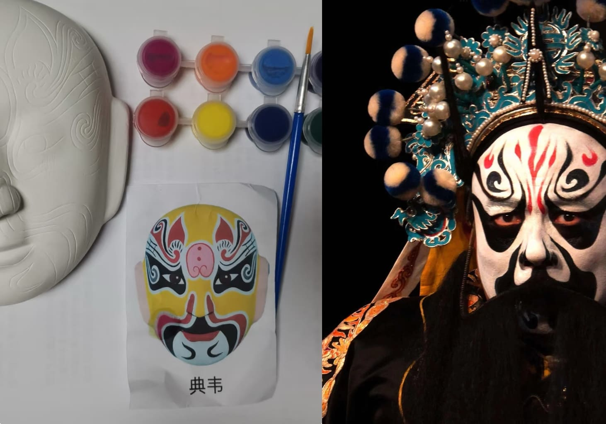

彩绘千面传奇，邂逅非遗神韵
|  |
DIY脸谱川剧脸谱 DIY 体验，恰似开启一扇通往神秘艺术殿堂的创意之门，引领您穿越时空、直抵文化核心。在此，您将成为艺术的创作者、文化的传承者。无需深厚绘画功底，仅怀对艺术的热忱与探索的勇气，便能踏上这充满奇趣的创作之旅。 您可依据自身对川剧人物的独特理解与个性诠释，自由挥洒创意画笔。从色彩的甄选调配，随心晕染理想色调；到线条的构思布局，精准雕琢面部轮廓与神情细节，赋予脸谱专属的神韵气质。为 “关羽” 添一抹更为醇厚庄重的红，强化其忠义无双的气场；为 “孙悟空” 勾勒灵动俏皮的线条，凸显其机敏活泼的天性。当亲手绘制的脸谱在眼前渐次成型，您收获的不仅是一件艺术品，更是一场与传统文化深度对话、情感交融的心灵奇遇。它是自我精神的具象投射、审美意趣的创意张扬，见证您与非遗文化邂逅的珍贵瞬间、传承创新的果敢实践。 |